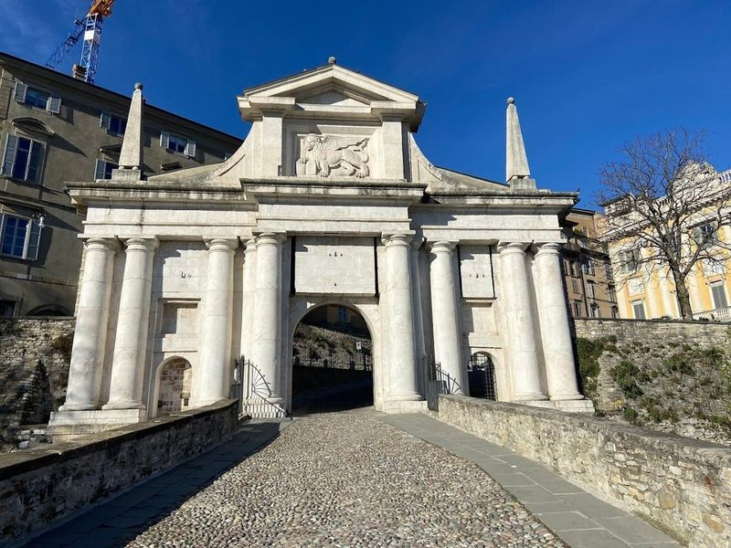
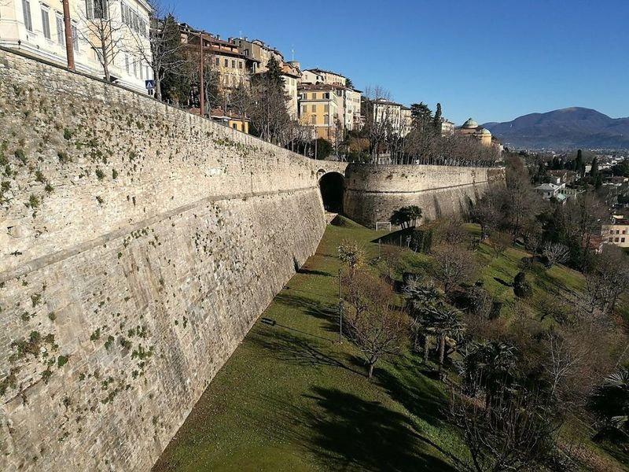
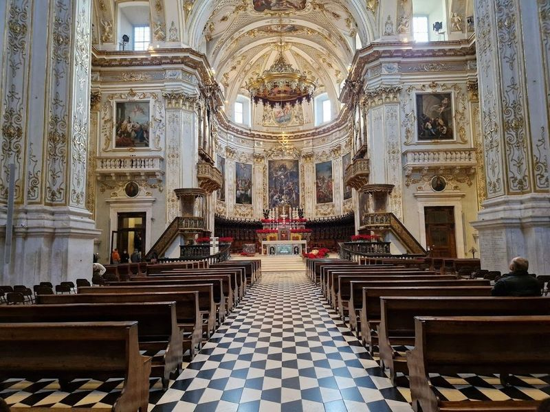
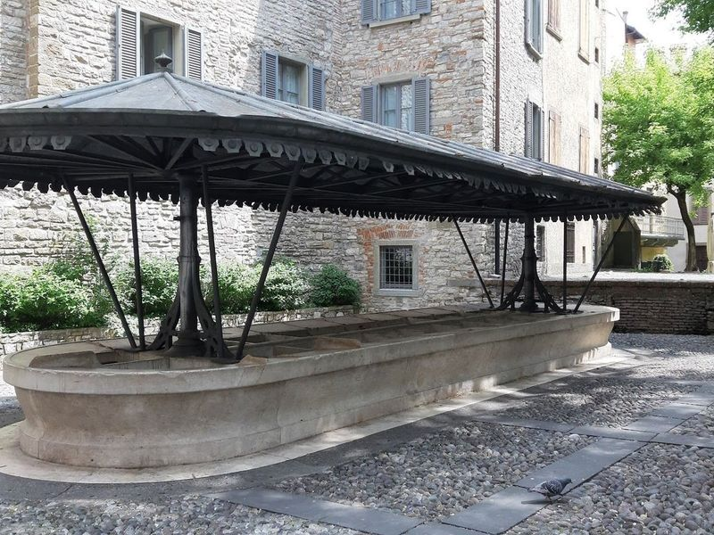
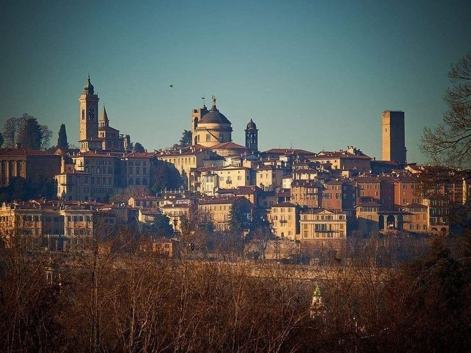
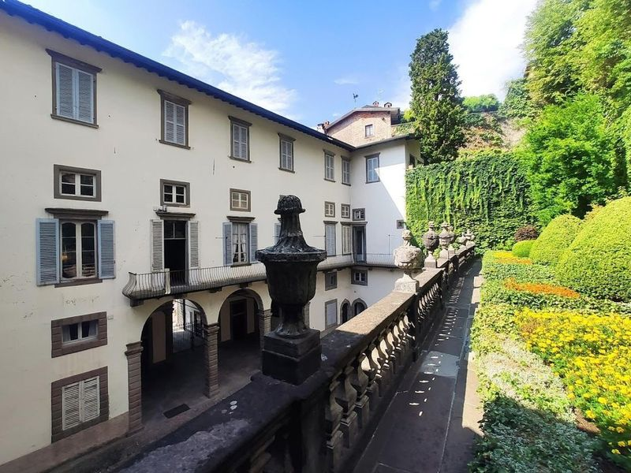
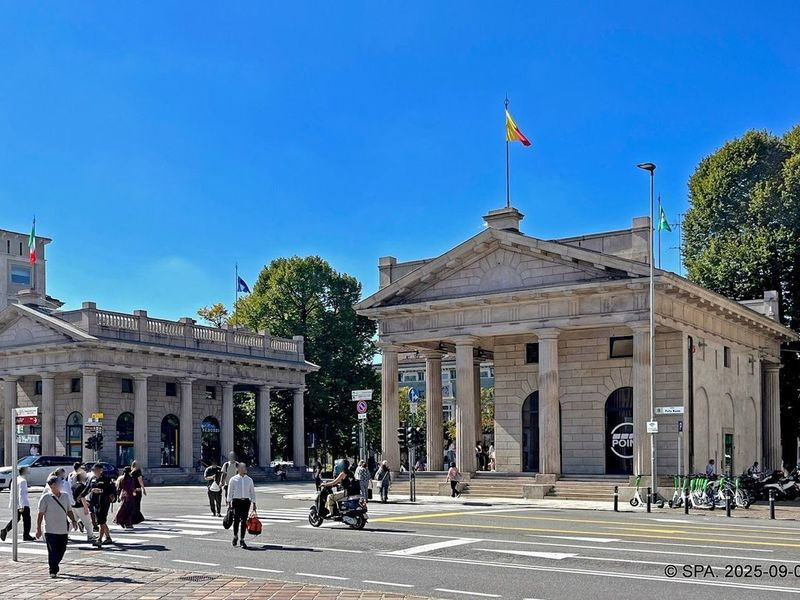
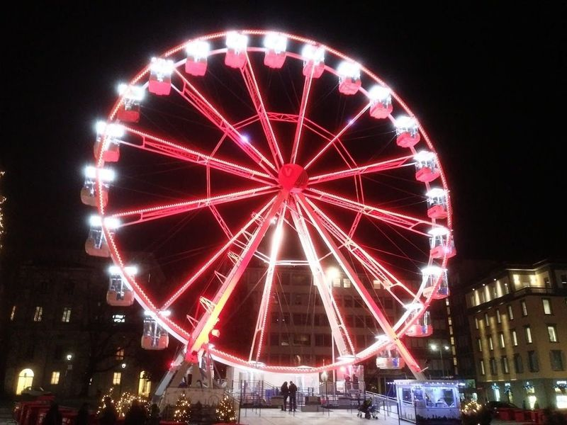
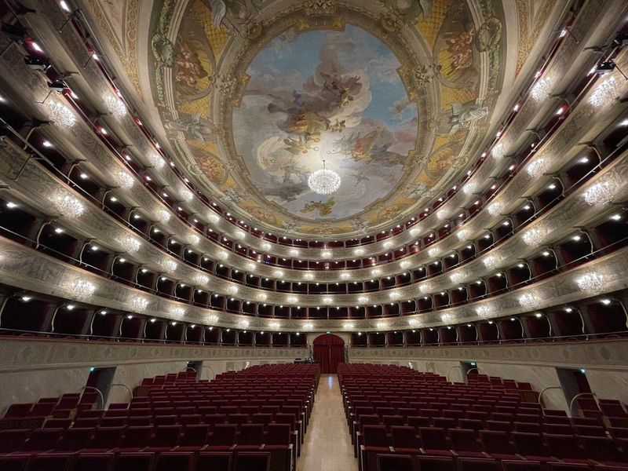
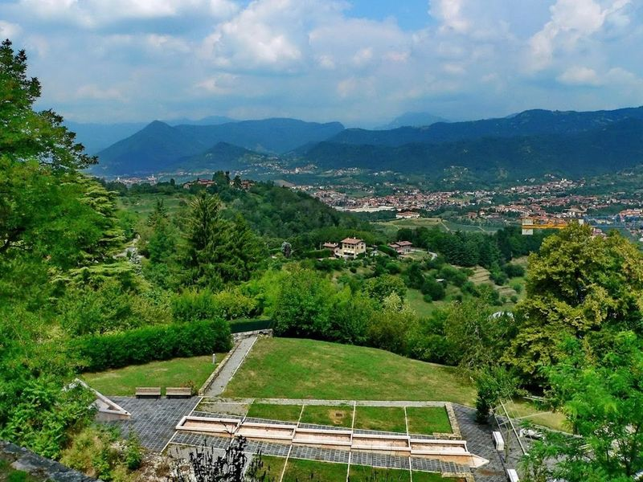

Explore Bergamo
A Brief History
Bergamo divides between a Venetian-walled Città Alta on the hill and a lower town expanded after the fifteenth century along the roads to Milan and the Alps. The Venetian Republic fortified walls, gates, and the Piazza Vecchia when Bergamo guarded the eastern approaches to its mainland territories. Silk mills, music conservatories, and Orio al Serio airport later tied the city to Lombard industry while funiculars still link medieval palaces to modern boulevards below.
Attractions Map
Top Sights & Activities

Porta San Giacomo
Porta San Giacomo is a white marble gate and stone viaduct that stands as an symbol of Bergamo's old town. This 16th-century structure, part of the Venetian fortifications, is a UNESCO World Heritage site and a attraction. The gate's impressive white and pink marble from Zandobbio glows beautifully in the sunlight, creating a magical backdrop for the city.

Mura Veneziane
Mura Veneziane-Patrimonio UNESCO, the 16th-century defensive walls, offer travellers a remarkable walking experience with panoramic views. These historic structures not only showcase Italy's rich cultural heritage but also play a vital role in promoting tourism in cities recognized as UNESCO Creative Cities. The initiative aims to enhance the appeal and competitiveness of these locations by supporting projects that highlight their unique cultural assets.

Bergamo Cathedral
in the heart of Città Alta, Bergamo Cathedral is a testament to history and architecture that dates back to the 12th century. This remarkable structure showcases an impressive neoclassical facade adorned with intricate sculptures, while its grand nave and soaring dome dominate the skyline of Old Town. As step inside, be greeted by a treasure trove of artistic masterpieces, including works by renowned artists like Giovan Battista Moroni and Andrea Previtali.

Antico Lavatoio
Antico Lavatoio, located in the Citta Alta, is a hidden gem where travellers and locals gather to wash clothes and socialize. This elegant structure, built in 1881, features a long tank of white marble covered by an iron and metal roof. It offers a water adduction system, overflow drain system, and gutter for water sprays during washing.

Piazza Mercato delle Scarpe
Piazza Mercato delle Scarpe is a square that serves as the starting point for an enchanting tour. From here, embark on a journey to Rocca Castle, offering views of the Lower Town. As continue walk, encounter Piazza Vecchia and Piazza Duomo, where notable landmarks like the Basilica of Santa Maria Maggiore and the Colleoni Chapel await.

Palazzo e Giardini Moroni
Palazzo e Giardini Moroni is an extravagant 17th-century palace located in Bergamo Alta. The interior boasts Baroque architecture and a rich art collection, with opulent frescoes adorning the walls and ceilings. travellers can take a self-guided tour through several rooms inside the palazzo and explore the beautifully landscaped gardens at the back.

Porta Nuova
Porta Nuova, also known as Barriera delle Grazie, is a grand gate in Bergamo that replaced an old wicket gate in 1837. It offers views of the hilltop city and is surrounded by neoclassical buildings from the 1830s. The area around Porta Nuova is lively and , especially during Christmas time when it features pedestrian areas, a shopping district, coffee shops, and Christmas markets.

Monument To Partisan
The Monument to Partisans is a captivating bronze wall war memorial created by Giacomo Manzù and unveiled in 1977. It pays tribute to the victims of Italian resistance during World War II. This historical landmark, situated in the city of Bergamo, evokes a sense of admiration with its exquisite design and artistic expression.

Gaetano Donizetti Theater
The Gaetano Donizetti Theater, also known as Teatro Donizetti, is a beautifully restored 18th-century building in Bergamo. Named after the renowned composer Domenico Gaetano Maria Donizetti, the theater hosts a variety of performances including opera, jazz, and drama. The venue's grand auditorium provides a setting for cultural events throughout the year.

Castello di San Vigilio
Torre Castello San Vigilio is an ancient stone castle located on a hill in Bergamo, offering panoramic views of the town and surrounding mountain ranges. Accessible by a funicular railway, this spot provides a peaceful retreat with plenty of seating areas to enjoy the contrasting scenery. The castle ruins and hidden underground tunnels add to the allure of this historical site.